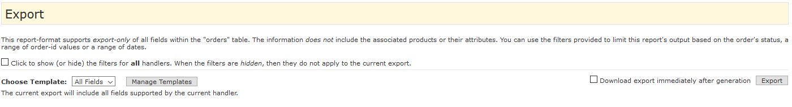
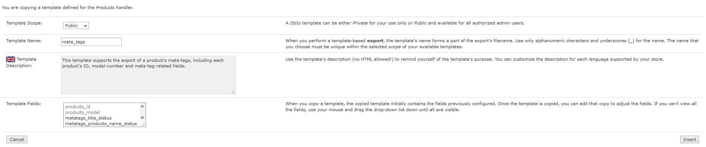

Version 1.6.8 Copyright © 2015-2022, Vinos de Frutas Tropicales.
Current Support Thread on the Zen Cart forums: https://www.zen-cart.com/showthread.php?220569-Database-I-O-Manager-(DbIo)-Support-Thread
DbIo emuliert eines der populäreren Zen Cart Plugins — Easy Populate — und bietet " Handler" zur einfachen Eingabe (Import) von Daten in die Datenbank Ihres Warenkorbs und zur Ausgabe (Export) dieser Daten über eine Komma-separierten-Wert (CSV) oder tabulatorgetrennte Datei. In DbIo ist ein " Handler" für alle I/O-Aktionen verantwortlich, die zur Unterstützung einer bestimmten Operation … erforderlich sind, wie das Importieren eines Satzes von Produktspezifikationen oder das Exportieren einer Liste von Kundenbestellungen.
Warum emulieren anstatt zur Entwicklung des EP-4 Plugins beizutragen? Angesichts der Prinzipien, welche die Entwicklung von DbIo geleitet haben:
… Die DbIo-Verarbeitung ist eine revolutionäre Abspaltung von Easy Populate; etwaige Unterschiede zwischen der Handhabung von EP-4 und DbIo werden in dieser Liesmich-Datei aufgezeigt.
Dieser Abschnitt beschreibt die Prozesse, die Sie verwenden werden, um DbIo zu installieren oder DbIo vollständig zu deinstallieren.
Es werden weder Kern-Dateien überschrieben noch Template-Überschreibungen, die von diesem Plugin verwendet werden; Sie sollten immer die Datenbank und Dateien Ihres Shops sichern, bevor Sie irgendwelche Änderungen vornehmen. Entpacken Sie die Paketdatei des Plugins und dann:
Löschen Sie zunächst die Dateien, die in das Dateisystem Ihres Zen Cart kopiert wurden, kopieren Sie dann den Inhalt von /UNINSTALL/uninstall_dbio.sql in die Zwischenablage und fügen Sie ihn ins Eingabefeld von Tools->SQL-Patches installieren Ihres Adminbereichs ein, um den Deinstallationsvorgang abzuschließen.
Dieser Abschnitt beschreibt die Schritte, die Sie zur Anpassung Ihrer Datenbank-I/O-Manager Installation durchführen.
Hinweis: Die Erweiterung DbIo erfordert für ihren korrekten Betrieb das Laden der PHP-Erweiterung php-mbstring; wenn sie nicht installiert ist, erhalten Sie eine Fehlermeldung, wenn Sie versuchen, Tools->Database I/O Manager zu verwenden. Wenn Sie diese Meldung erhalten, müssen Sie Ihren Webhoster kontaktieren und beantragen, dass die Erweiterung auf den Server Ihres Shops geladen wird.
Hier sind einige Dinge, die Sie beim Einrichten und Konfigurieren Ihrer DbIo Installation beachten sollten:
CHARSET Ihres Shops mit den DB_CHARSET-Werten Ihres Shops kompatibel ist. Es ist Ihre Aufgabe, den Zeichensatz, der von dem von Ihnen ebenfalls verwendeten Tabellenkalkulationstool (z.B. Apache OpenOffice oder Microsoft Excel) verwendet wird, richtig zu identifizieren.Sie verwenden die Einstellung Konfiguration->DbIo-Manager-Einstellungen->CSV: Codierung, um DbIo anzuweisen, wie die Daten zu interpretieren sind, die aus einer CSV-Datei stammen oder zu einer CSV-Datei gehen. Setzen Sie diesen Wert auf utf8, wenn Sie Apache OpenOffice (oder ein anderes bekanntes utf8-generierendes Programm) verwenden, oder auf latin1, wenn Sie Microsoft Excel verwenden.
CSV Dateien, die von dem Handler Featured verarbeitet werden sollen, im Ordner /DEIN_ADMIN/dbio/ und tragen den Namen dbio.Featured.irgendwas.csv.language_id (z.B. v_products_name_1) verwendet, um sprachspezifische Felder zu identifizieren, hängt DbIo bei der Identifizierung sprachspezifischer Werte den (portableren) language_code (z.B. v_products_name_en) an.products_status auf einen Wert von 9 zu setzen, um ein zu entfernendes Produkt zu kennzeichnen, führt DbIo eine neue Spalte (v_dbio_command) ein, die ein Handler konditional aktivieren kann, um die Datensatzentfernung und/oder andere Befehle zu unterstützen. Beginnend mit v1.1.0 unterstützt die Handhabung von Produkte dieses Feld; setzen Sie den Wert dieser Spalte für ein bestimmtes Produkt auf ENTFERNEN und, falls das Produkt existiert, wird es entfernt.Nachdem Sie DbIo installiert haben, können Sie die Grundeinstellungen über Konfiguration->DbIo-Manager-Einstellungen anpassen:
| Feldname | Feldbeschreibungen |
|---|---|
| Version/Freigabedatum | Zeigt die Versionsnummer und das Veröffentlichungsdatum des Plugins an. |
| CSV: Begrenzer | Geben Sie das einzelne Zeichen ein, das zum Trennen von Spalten innerhalb einer DbIo-CSV-Datei verwendet wird. Um das Tabulator-Zeichen als Trennzeichen zu verwenden, geben Sie das Wort TAB ein. Standardmäßig wird das Komma-Zeichen (,) verwendet. |
| CSV: Anhang | Geben Sie das einzelne Zeichen ein, das zum Einschließen von Feldern innerhalb einer DbIo-CSV-Datei verwendet wird. Standardmäßig wird das Zeichen mit doppelten Anführungszeichen (") verwendet. |
| CSV: Escape | Geben Sie das einzelne Zeichen ein, das als Escape-Zeichen in jeder DbIo-CSV-Datei verwendet wird. Standardmäßig wird das Backslash (\)-Zeichen verwendet. |
| CSV: Kodierung | Wählen Sie die Art der Kodierung, die mit allen DbIo I/O-Dateien verknüpft werden soll. Wenn Sie Microsoft® Excel verwenden, wählen Sie latin1; wenn Sie Apache OpenOffice verwenden, wählen Sie utf8. |
| CSV: Datumsformat importieren | Wählen Sie das Format, das von jeder DbIo CSV-Datei beim Import der Felder date und datetime verwendet wird, eines der Felder:
|
| Maximale Ausführungszeit (Sekunden) | Geben Sie die maximale Ausführungszeit für eine DbIo-Operation in Sekunden ein. Voreinstellung: 60 |
| Geteilte Datei: Anzahl der Datensätze | Manchmal kann das Aufteilen einer csv-Datei in mehrere kleinere Dateien helfen, wenn Ihr Server bei einem Importvorgang eine Zeitüberschreitung hat oder wenn eine exportierte csv-Datei zu groß ist, um sie in einem einzigen Chunk herunterzuladen. Geben Sie die Anzahl der Datensätze (Standard: 2000) ein, in die diese Dateien mit dem Database I/O Manager aufgeteilt werden sollen. |
| Standard-Dateisortierreihenfolge | Wählen Sie die Standard-Sortierreihenfolge, die der Database I/O Manager bei der Anzeige der entdeckten I/O-Dateien verwendet, eine davon:
|
| Produkte Importieren: Doppelte Artikelnummern erlauben? | Wählen Sie, ob (Ja) oder nicht (Nein) jeder Produkt-Import erlaubt sein soll, um die "Artikelnummer" eines bestehenden Produkts zu ändern. Voreinstellung: Nein. (Eingeführt in v1.1.0). |
| Produkte: Artikel anlegen erforder Befehl? | Benötigt ein Artikel Import einen DbIo ADD Befehl? Wählen Sie No (Voreinstellung) um es zu erlauben, dass Artikel angelegt werden falls keine übereinstimmende products_id und/oder products_model gefunden wird.Wählen Sie Yes um jeden Artikelimport zu verbieten, der zum Anlegen eines neuen Artikels führen würde außer der ADD Befehl ist vorhanden. (Neu seit v1.6.4) |
| Produkte: Kategorien beim Import automatisch erstellen? | Wie soll die DbIo fehlende Kategorien auf einem Produkt-Import behandeln? Wählen Sie Ja, um alle fehlenden Kategorien automatisch generieren zu lassen; wählen Sie Nein (die Voreinstellung), um den Import von Produkten zu unterbinden, wenn die Kategorien vorher noch nicht existieren. (Eingeführt in v1.3.0) |
| Debuggen aktivieren? | Bestimmen Sie, ob (true) oder nicht (false, die Voreinstellung) der DbIo-Debug aktiviert werden soll. Wenn aktiviert, wird der gesamte I/O-Status in eine dbio-*.log-Datei im Ordner /DEIN_ADMIN/dbio/logs Ihres Shops geschrieben. |
| Datumsformat debuggen | Geben Sie die Formatierungszeichenfolge ein, die zum Zeitstempeln aller DbIo-Log-Einträge verwendet wird; weitere Informationen finden Sie in der Beschreibung der PHP-Funktion date. (Voreinstellung: Y-m-d H:i:s). |
DbIo verwendet "Handler" Skripte zum Anpassen einer I/O-Aktion; die folgende Tabelle zeigt die derzeit angebotenen Handler.
| Handler Name | Aktionen | Export-Filter | Anpassbar? | Beschreibung | EP-4 Name |
|---|---|---|---|---|---|
| Customers | Export | Keine | No | Dieser Handler stellt den Nur-Export aller Felder in der Tabelle customers der Datenbank zur Verfügung. |
— |
| Featured | Import, Export | Keine | Nein | Dieser Handler ermöglicht den Import und Export aller Felder in der Tabelle featured der Datenbank. |
Featured Products |
| Manufacturers | Import, Export | Keine | Nein | Dieser Handler ermöglicht den Import und Export aller Felder in den Tabellen manufacturers und manufacturers_info der Datenbank, hinzugefügt in v1.2.0. |
— |
| Orders | Export | Orders Status, ID Range, Date Range | Ja | Dieser Handler unterstützt den nur-Export aller Felder innerhalb der Tabelle orders. Die Information enthält nicht die zugehörigen Produkte oder deren Attribute. |
— |
| OrdersProducts | Export | Orders Status, ID Range, Date Range | Nein | Dieser Handler unterstützt den nur-Export der Kundeninformationen einer Bestellung sowie die Artikelnummern und -namen der zugehörigen Produkte. | — |
| OrdersProductsAttributes | Export | Orders Status, ID Range, Date Range | Nein | Dieser Handler unterstützt einen nur-Export der Kundeninformationen einer Bestellung und die Artikelnummern, -namen und -attribute der zugehörigen Produkte (Option-Name/Wert-Paare). | Filterable Order Exports: Orders Full |
| Products | Import, Export | Product Status, Manufacturer, Category | Ja | Dieser Handler unterstützt den Import/Export von allen Feldern innerhalb der Tabellen products, products_description und meta_tags_products_description, den grundlegenden Produktinformationen.
|
Complete Products |
| ProductsOptions | Import, Export | Keine | Nein | Dieser Handler unterstützt den Import/Export von allen Feldern innerhalb der Tabelle products_options, der Informationen zu den Optionen der Produkte enthält. Beim Import von neuen Datensätzen für einen mehrsprachigen Shop sollte der Import einmal pro Sprachwert durchgeführt werden. Andernfalls wird die products_options_id zwischen den mehreren Sprachen "out-of-sync". |
— |
| ProductsOptionsValues | Import, Export | Keine | Nein | Dieser Handler unterstützt den Import/Export von allen Feldern innerhalb der Tabelle products_options_values, die Informationen über die Werte der Optionen der Produkte enthalten. Beim Import von neuen Datensätzen für einen mehrsprachigen Shop sollte der Import einmal pro Sprachwert durchgeführt werden. Andernfalls wird die products_options_id zwischen den mehreren Sprachen "out-of-sync". |
— |
| ProductsAttribsBasic | Import, Export | Keine | Nein | Dieser Handler unterstützt den Import/Export der Basisfelder, die mit der Tabelle products_attributes verknüpft sind, wobei ein products_model Wert verwendet wird, um ein Produkt mit den Attributwerten zu verknüpfen (products_options_type, products_options_name und products_options_values name). |
Basic Products Attributes |
| ProductsAttribsRaw | Import, Export | Keine | Nein | Dieser Handler unterstützt den Import/Export von allen Feldern, die mit der Tabelle products_attributes assoziiert sind, wobei die Werte products_id, options_id und options_values_id verwendet werden, um einen Datensatz in der Tabelle zu identifizieren und somit festzustellen, ob es sich bei dem Datensatz um ein Insert oder ein Update handelt. |
Detailed Products Attributes |
| ProductsDiscountQuantity | Import, Export | Keine | Nein | Dieser Handler unterstützt den Import/Export von Feldern, die mit der Tabelle products_discount_quantity verbunden sind, wobei der Wert products_id verwendet wird, um das Produkt zu identifizieren, für das die Rabattmengen aktualisiert werden sollen. Weitere Informationen finden Sie in den Bildschirmanweisungen des Handlers. |
— |
| Specials | Import, Export | Keine | Nein | Dieser Handler unterstützt den Import/Export von Feldern, die mit der Tabelle specials verbunden sind, indem er den Wert products_id verwendet, um das Produkt zu identifizieren, für das ein Sonderangebot aktualisiert werden soll. Weitere Informationen finden Sie in den Bildschirmanweisungen des Handlers.Das Sonderangebot eines Produkts-Sonderpreis kann mit Hilfe einer Spalte v_dbio_command entfernt werden, wobei der Wert auf ENTFERNEN gesetzt wird. |
— |
| Stats | Export | Keine | Nein | Dieser Handler unterstützt den Export von allen Feldern, die in der Tabelle dbio_stats vorhanden sind, wobei DbIo seine Statistiken aufzeichnet. Ab v1.6.0 wird die Tabelle geleert, sobald sie exportiert wurde. |
— |
Es folgen die Benennungskonventionen, die vom Database I/O Manager verwendet werden:
/DEIN_ADMIN/includes/classes/dbio/DbIoMyHandlerHandler.php/DEIN_ADMIN/includes/languages/english/dbio/DbIoMyHandlerHandler.phpDieser Abschnitt beschreibt die Verwendung des Werkzeugs Tools->Database I/O Manager.
| Auswahlbereich | |
| Export-Bereich | Datei-Upload-Bereich |
| Import/Datei-Aktionsbereich | Konfigurationsbereich |
Der Database I/O Manager gliedert seine Anzeige in fünf (5) Abschnitte:
CSV-Datei von Ihrem Computer hochladen möchten, um die DbIo zu bearbeiten. Diese Datei wird nach dem erfolgreichen Hochladen im Ordner /DEIN_ADMIN/dbio im Shop gespeichert..csv und .log Dateien an. Innerhalb dieses Abschnitts können Sie eine Datei zum Importieren, Aufteilen, Herunterladen oder Löschen auswählen; weitere Einzelheiten finden Sie auf der Registerkarte Andere Dateiaktionen.Dieser Abschnitt zeigt die für den aktuell ausgewählten Handler verfügbaren Exportoptionen an. Einige der Handler, wie z.B. Orders (siehe unten), verwenden zusätzliche Filter, die es Ihnen ermöglichen, die Ausgabe des Exports einzuschränken und/oder Anpassungen der Exportvorlage zu ermöglichen.
Filter, wenn sie vom ausgewählten Handler unterstützt werden, werden zunächst nicht angezeigt, da die Erzeugung dieser Filter bei Shops mit großen Datenbanken die Leistung der Tools negativ beeinflussen kann. Wenn Sie das Kästchen "show/hide filters" ankreuzen, aktivieren/deaktivieren Sie das automatische Rendern der Filter für
Vorlagen, sofern vom ausgewählten Handler unterstützt, ermöglichen es Ihnen, eine Teilmenge der Felder des Handlers zu exportieren. Weitere Informationen finden Sie auf der Registerkarte DbIo-Vorlagen verwalten. Wenn ein Handler Vorlagen unterstützt, wie Orders, können Sie eine zuvor angepasste Vorlage verwenden oder auf die Schaltfläche "Vorlagen verwalten" klicken, um eine neue Vorlage zu erstellen.
Treffen Sie Ihre Auswahl aus den vom aktuellen Handler bereitgestellten Optionen und klicken Sie auf die Schaltfläche Export; die exportierte Datei .csv wird im Ordner /DEIN_ADMIN/dbio erstellt. Wenn Sie ab v1.6.0 das Kontrollkästchen neben der Schaltfläche Export< ankreuzen, wird die erzeugte .csv-Datei beim Export sofort heruntergeladen; diese Einstellung lautet "erinnern" in der aktuell angemeldeten Admin-Sitzung.
Hinweis: Zusätzliche Verarbeitungszeit wird für den DbIo Manager Export benötigt, wenn Sie den Debug-Modus des Plugins aktiviert haben.
Dieser Abschnitt zeigt einfach die aktuellen Konfigurationseinstellungen (und einige der anwendbaren Systemeinstellungen) des DbIo an, damit Sie wissen, wie der DbIo-Manager Ihre Anfrage bearbeiten wird. Wenn Sie auf den Link klicken, gelangen Sie auf die Seite Konfiguration->Database-I/O-Manager-Einstellungen.
Wenn der aktuell ausgewählte Handler Importe unterstüzt, können Sie diesen Abschnitt verwenden, um alle .csv Dateien hochzuladen, die Sie in die Datenbank Ihrer Website importieren möchten. Verwenden Sie die Schaltfläche "Browse", um Ihre Datei auszuwählen. Stellen Sie sicher, dass die Datei nicht größer ist als die im Konfigurationsbereich DbIo angezeigte Maximale Datei-Upload-Größee, und klicken Sie dann auf die Schaltfläche "Upload". Die Datei wird im Ordner /DEIN_ADMIN/dbio gespeichert.
Hinweis: Der Name der importierten Datei muss mit dem aktuell ausgewählten Handler verknüpft sein, z.B. wenn der Handler Products ausgewählt ist, muss der Name der hochgeladenen Datei die Form dbio.Products.*.csv haben.
Dieser Abschnitt des Ordners DbIo Manager ermöglicht Ihnen die Verwaltung der .csv-Dateien, die sich im Ordner /DEIN_ADMIN/dbio Ihrer Website befinden, sowie der DbIo-generierten .log-Dateien, die sich im Ordner /DEIN_ADMIN/dbio/logs Ihrer Website befinden.
Sie können ausgewählte Dateien löschen, indem Sie das (die) zugehörige(n) Kontrollkästchen in der Spalte Löschen? ankreuzen und dann auf die Schaltfläche "Löschen" &mdash klicken; Sie erhalten ein Bestätigungs-Popup, nur um sicherzugehen.
Sie können auch die Dropdown-Auswahl am oberen Rand der Anzeige verwenden, um zusätzliche Aktionen mit der Datei durchzuführen, die über den Auswahlknopf in der Spalte Datei auswählen ausgewählt wurde:
Sie können die vom DbIo Manager gefundenen Dateien nach Dateiname, Dateigröße oder dem Datum der letzten Änderung sortieren, indem Sie die Pfeil-Links in der Kopfzeile der Dateiliste verwenden.
DbIo definiert den Ordner /DEIN_ADMIN/dbio als den Ort, an dem sich Ihre CSV-Dateien ( Komma-separierte-Werte) befinden. Immer wenn DbIo eine Datendatei ausgibt (exportiert), wird die Datei in diesem Ordner erstellt; alle .csv Dateien , die mit dem aktuell aktiven Handler in diesem Ordner assoziiert sind, werden im "Import/Datei-Aktionsbereich" von DbIo angezeigt.
Wenn Sie DbIo's debug mit Konfiguration->DbIo Manager Settings->Enable Debug? aktivieren, werden die Protokolldateien im Ordner /DEIN_ADMIN/dbio/logs erstellt.
Dieser Abschnitt beschreibt die Verwendung des Werkzeugs DbIo-Vorlagen konfigurieren, das durch Klicken auf die Schaltfläche "Vorlagen verwalten" aus <Werkzeuge->Database I/O Manager< verfügbar ist, wenn der aktuell ausgewählte Handler den Export Vorlage unterstützt.
Die Templating-Unterstützung von DbIo ermöglicht es Ihnen, eine Teilmenge der vom aktuell ausgewählten Handler bereitgestellten Felder für einen kundenspezifischen Export und anschließenden Import auszuwählen. Es gibt eine Reihe vordefinierter Vorlagen für den Produkte-Handler, die Ihnen eine Vorstellung davon vermitteln, was Sie mit dieser Funktion tun können.
Beim ersten Einstieg in den DbIo Template-Manager werden die Vorlagen für den aktuell ausgewählten Handler angezeigt. Zu jedem Handler werden die folgenden Informationen angezeigt:
Wenn Sie eine DbIo-Vorlage erstellen oder bearbeiten, wird eine Seite ähnlich der folgenden angezeigt. Innerhalb dieser Seite identifizieren Sie den Umfang, den Namen und die Beschreibung der Vorlage und verwenden dann den Block Vorlagenfelder wählen, um die Felder auszuwählen, die in einen vorlagenbasierten Export einbezogen werden sollen, sowie die Reihenfolge, in der diese Felder in der .CSV-Ausgabedatei erscheinen sollen. Einige Merkmale dieses Abschnitts sind:
Wenn Sie eine vorhandene Vorlage kopieren, können Sie den Umfang und/oder den Namen der Vorlage ändern, aber der von Ihnen gewählte Name muss innerhalb des Umfangs eindeutig sein. Diese Funktion ermöglicht es Ihnen, eine private Kopie einer öffentlichen Vorlage zu erstellen und diese für Ihre Verwendung weiter anzupassen. Sie können auch eine öffentliche Kopie einer privaten Vorlage erstellen, die alle autorisierten Admins verwenden können.
Sie können die Details dieser Änderungen im Original GitHub-Repository des Plugins einsehen.
Änderungen in der deutschen Version des Plugins im entsprechenden Repository der deutschen Zen Cart Version hier
dbio_reports::handler_name for utf8mb4 database collations.DbIoProductsHandler 'ADD' for missing/duplicate (if configured) model numbers.DbIoProductsHandler, correcting potential creation of category with an 'empty' name.$GLOBALS.dbio_stats table on an export.specials table.GROUP BY clause.v_dbio_command value of REMOVE.GROUP BY clause.DB_CHARSET of utf8mb4 not recognized as valid utf8 variant.double.Products export columns are "off" for its specially-handled fields, due to v_dbio_command column inserts.ProductsDiscountQuantity handler.Products export results in error when imported.Customers export.Products customized language fields' ordering.Products export returns all fields of the products_description table.NULL.php-mbstring extension is not loaded.v_dbio_command column, allowing handlers (e.g. Products) to accept commands (like REMOVE).DbIoHandler class.DbIoProductsHandler has been updated to enable an import based on either products_id or products_model.